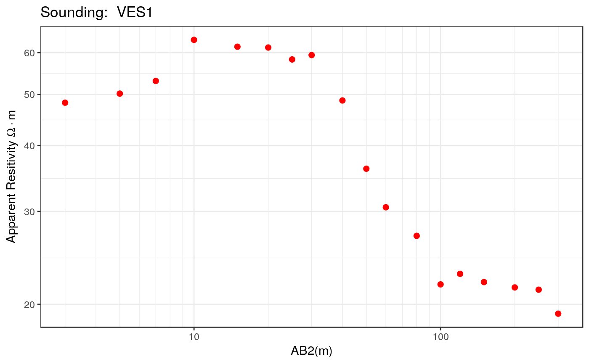
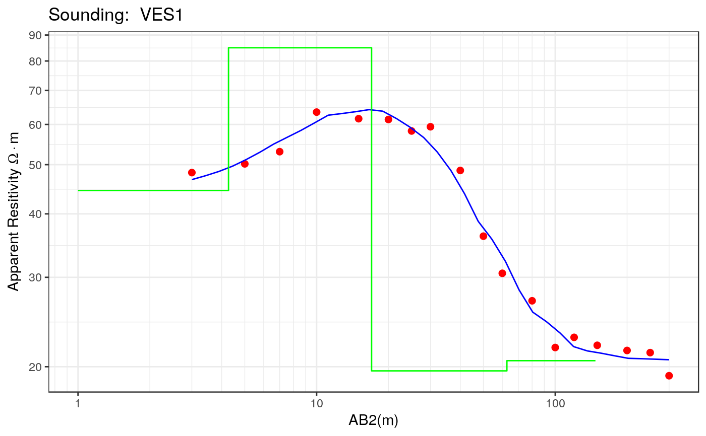

plot.ves
plot.ves.RdFunction to plot the Vertical Electric Sounding data. This function can create two different types of plots: resistivity and interpretation. The resistivity plot includes the apparent resistivity vs electrode spacing. In the interpretation plot, the values of the apparent resistivity vs electrode spacing and the thickness and real resisitivity of the layers are included.
# S3 method for ves plot(x, main = NULL, type = c("ves", "transformation", "diagnostic"), trans.type = c("direct", "scaling", "zohdy", "zohdy.smoothed"), ...)
Arguments
| x | A VES object |
|---|---|
| main | Title of the plot |
| type | A character string specifying the plot type. Currently only ves (measurements and earth model), transformation (resistivity-depth transformation) and diagnostic are supported. |
| trans.type | A character string specifying the transformation type. Only direct, scaling, zohdy and zohdy.smoothed are currently supported. |
| ... | Additional parameters to be passed to the plot function |
See also
Other base functions: print.ves,
summary.ves, ves
Examples
library(grid) library(gridExtra) data(ves_data1) ab2 <- ves_data1$ab2 apprho <- ves_data1$apprho sev1a <- ves(id= "VES1", ab2 = ab2, apprho = apprho) # Conventional VES plot plot(sev1a, type = "ves")# Apply direct transformation to sev1a plot(sev1a, type = "transformation", trans.type = "direct")# Apply scaling transformation to sev1a plot(sev1a, type = "transformation", trans.type = "scaling")# Apply Zohdy transformation to sev1a plot(sev1a, type = "transformation", trans.type = "zohdy")# Apply Zohdy smoothed transformation to sev1a plot(sev1a, type = "transformation", trans.type = "scaling")# Diagnostic plot rho <- c(40,70,30, 20) thick <- c(2,10,50,500) par0 <- c(rho, thick) res.nls <- calibrate_nls(sev1a, par0, iterations = 30, ireport = 5, trace = FALSE) sev1a$rhopar <- res.nls$rho sev1a$thickpar <- res.nls$thickness sev1a$interpreted <- TRUE p1 <- plot(sev1a, type = "ves") print(p1)